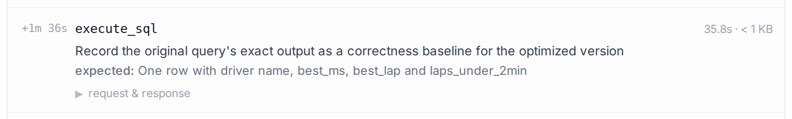
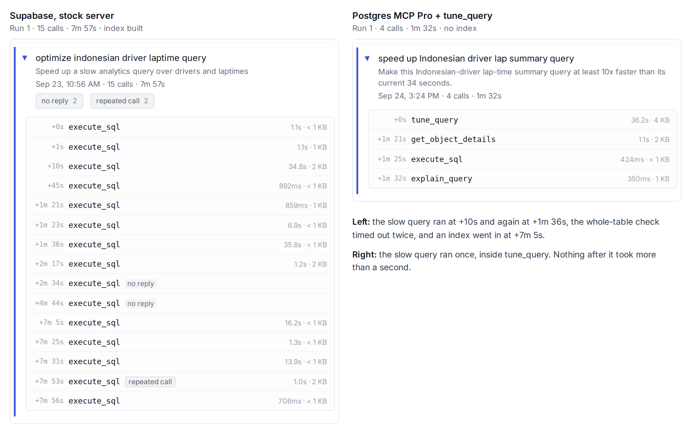
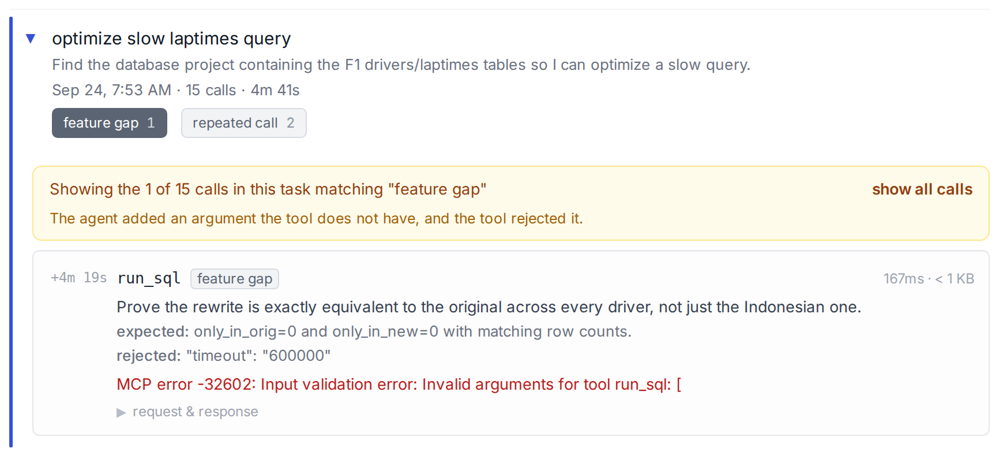
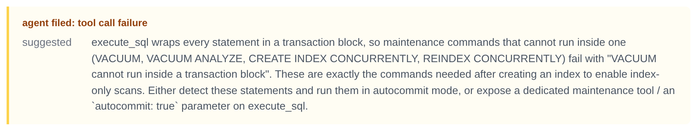

An agent tuned the same slow query on 3 Postgres MCP servers. It had notes.
Agents are the new users of your product. They don't fill out surveys, but they are happy to tell you what they think, if you know how to ask. We gave one a slow query, told it to make it 10 times faster on Supabase, Neon and Postgres MCP Pro, and wrote down what it said along the way.
We used the same agent (Claude Code on Claude Opus 5), the same data, the same query and the same one-line ask on all 3: make it at least 10 times faster. We wrapped each server in Baton, which we make. It records what the agent was trying to do on every call and gives it a place to file a complaint.
The task
The agent gets the query and one sentence: "This query takes 34 seconds. Make it at least 10 times faster." The data is Formula 1 lap times, 1.6 million rows, and the query finds the best lap for drivers of one nationality. This query has an easy fix. It's slow because of a correlated subquery that runs once per row. Pull it out into one grouped pass and it drops from 34 seconds to under a fifth of a second. The full query is at the bottom.
Results: All over the place
Every run eventually got the fast query, but how they achieved it and how long it took varied widely.
| MCP Server | Run | Agent time (s) | Ran the slow query | Built an index |
|---|---|---|---|---|
| Supabase | 1 | 513 s | 4 times | yes |
| Supabase | 2 | 218 s | 3 times | no |
| Supabase | 3 | 211 s | 1 time | yes |
| Neon | 1 | 309 s | 2 times | yes, 2 of them |
| Neon | 2 | 290 s | 1 time | no |
| Postgres MCP Pro | 1 | 159 s | 1 time | yes |
| Postgres MCP Pro | 2 | 224 s | 2 times | yes |
| Postgres MCP Pro | 3 | 196 s | 2 times | yes |
| Postgres MCP Pro | 4 | 143 s | 1 time | yes |
Time to complete ranged from 143 seconds to 513, and the original slow query was run anywhere from 1 to 4 times. Most runs shipped an index, which you probably don't want unless you're required not to change the query, and we gave no such requirement. There were also some deep-sea expeditions to verify the results, which we'll cover in the next section.
Reliable results start with knowing what the agent was doing
At this point, many people shrug. Agents, who knows why they do what they do. Non-determinism, and so on. We can do better, because Baton lets us see inside their heads.
There are 3 problems:
- Extra runs of the slow query
- Building an index
- Verification of results
1. Extra runs of the slow query. One run of the original is unavoidable; the agent needs a number. The extra runs are the problem. The first run was usually EXPLAIN ANALYZE, which gives it the time but not the results, so the agent ran it again to get them. We know because in Baton we see:

That was Supabase run 1, 35.8 seconds. Neon run 1 did the same, for 63 seconds. Supabase run 2, 38 seconds. It's a sensible instinct that costs at least 1 extra execution of a query that we are optimizing because it's taking too long, so this can be expensive. In the server's log it is 1 more execute_sql, indistinguishable from the first.
2. Building an index. All 3 servers built one, 7 of 9 runs in total, and none needed to, because a rewrite is sufficient. Neon run 1 says why it did:
intent: Measure how much the new index alone speeds up the unmodified query.
This agent decided that no code changes was the important thing, which makes sense, because we never told it otherwise.
3. Verification of results. After rewriting, the agent checked that the new query gives the same answer as the old one. It did that by running the old 34-second query again, for all 800 drivers instead of one. On Supabase run 1 that timed out twice, 241 seconds of a 513-second session:
intent: Prove the rewritten query returns identical results to the original across many drivers.
Then it built an index, just so the check could finish:
intent: Add a covering index so per-driver laptime lookups stop scanning the entire 1.6M-row index
expected: Index created without blocking writes
The check passed in 14 seconds, and the index shipped with the fix. Checking the fix cost more than the fix, and left something behind.
That is where the time went: extra runs of the slow query, an index nobody asked for, and verifying results by running the slow query yet again. All 3 are the agent filling in what we never told it. This would have been very difficult to figure out with server logs alone, but with the intents from Baton, we can easily identify the root cause, and how to fix it.
Our version
We want a reliable query tuning experience, so we forked Postgres MCP Pro and added one tool, tune_query. Everything else in the server is untouched.
It takes the query and 2 flags, may the query text change and may indexes be added, which default to yes and no.
It runs the query once and returns the plan, the timing, the result rows and a hash of the full result together. There's nothing left to run the original for. And it returns the exact statement to hash a rewrite the same way, so verifying a rewrite is a comparison of 2 hashes instead of a re-run of the original.
The response ends with the rule that applies to the flags. With rewrite allowed and index not: "Rewrite only. Do not create indexes. Verify with verify_sql; do not re-run the original."
3 runs, same one-line ask, rewrite allowed, no index:
| Run | Agent time (s) | Ran the slow query | Built an index |
|---|---|---|---|
| 1 | 124 s | 1 time | no |
| 2 | 179 s | 1 time | no |
| 3 | 132 s | 1 time | no |
Every run ran the slow query once, no run built an index, and none went back to the original to verify. 124 to 179 seconds, against 143 to 513 for the stock servers.

Nothing in that tool is clever. It settles the one question the agent was guessing at, it hands over the baseline so the agent doesn't go back for it, and it puts the rule in the response the agent is already reading instead of in a description it skimmed at startup.
More customer feedback from the agent
The agent also had a tool for filing a complaint when a server got in its way, and it used it a few times. Here are 2 worth passing along.
1. A feature request for a timeout on Neon. On a long verification query the agent added a timeout argument that run_sql doesn't have. Neon rejected it, the agent dropped it and ran the query with no cap. Baton flags an argument a tool rejects as unknown as a feature request, because that is what it is: the agent asking for a parameter.

2. Maintenance commands can't run on Postgres MCP Pro. It wraps every statement in a transaction, and Postgres refuses to run VACUUM or CREATE INDEX CONCURRENTLY inside one. The agent hit that after building its index, shipped without confirming the index-only scan it had built the index for, and filed:

That is the agent's text, unedited. The server's error rate for the session reads 0%, because the refusals came back inside normal-looking responses. Supabase and Neon both run those statements fine.
The first of many agent taste tests
An agent sat down with 3 Postgres servers, did the same job on each, and told us exactly where each one made it work harder than it had to. Nobody interviewed it. It said all of this on the way through, and it will say it about your server too.
We want to run more taste tests, and not just on databases. Jira against Linear. Granola against Otter. There are so many possibilities.
If you build an MCP server, wrap it with Baton and the agent will say the same about yours. Setup is one command for Claude Code, or a prompt for any other agent, at baton.goodtiming.ai.
You can help us pick the next matchup. Reply wherever you found this, or email dave@goodtiming.ai, with 2 servers and one job to be done. The one with the most votes is the next post, and if you build one of the servers, you get the agent's notes before it goes up.
The data and the query
The data is the `formula_1` database from [BIRD Mini-Dev](https://bird-bench.github.io/), with the `laptimes` table grown to 1.6 million rows. The query:SELECT d.forename || ' ' || d.surname AS driver,
MIN(l.milliseconds) AS best_ms,
MIN(l.time) FILTER (WHERE l.milliseconds = (SELECT MIN(l2.milliseconds)
FROM public.laptimes l2
WHERE l2.driverid = d.driverid)) AS best_lap,
COUNT(*) FILTER (WHERE l.milliseconds < 120000) AS laps_under_2min
FROM public.drivers d
JOIN public.laptimes l ON l.driverid = d.driverid
WHERE d.nationality = 'Indonesian'
GROUP BY d.driverid, d.forename, d.surname
ORDER BY best_ms;